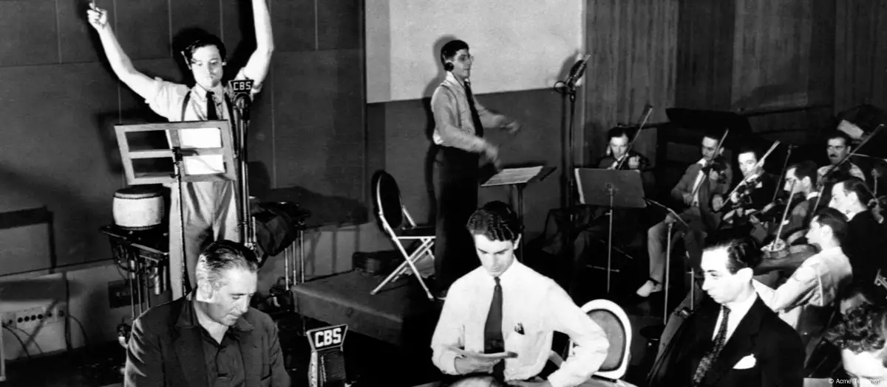

Aquele 30 de outubro de 1938 parecia uma noite normal, até que a rede de rádio CBS (Columbia Broadcasting System) interrompeu sua programação musical para noticiar uma suposta invasão de marcianos. A "notícia em edição extraordinária", na verdade, era o começo de uma peça de radioteatro, que não só ajudou a CBS a bater a emissora concorrente, a NBC, como também desencadeou pânico em várias cidades americanas. "A invasão dos marcianos" durou apenas uma hora, mas marcou definitivamente a história do rádio.
Dramatizando o livro de ficção científica A Guerra dos Mundos, do escritor inglês Herbert George Wells, o programa relatou a chegada de centenas de marcianos a bordo de naves extraterrestres à cidade de Grover's Mill, no estado de Nova Jersey. Os méritos da genial adaptação, produção e direção da peça eram do então jovem e quase desconhecido ator e diretor de cinema americano Orson Welles. O jornal Daily News resumiu na manchete do dia seguinte a reação ao programa: "Guerra falsa no rádio espalha terror pelos Estados Unidos".
A dramatização, transmitida às vésperas do Halloween (dia das bruxas) em forma de programa jornalístico, tinha todas as características do radiojornalismo da época, às quais os ouvintes estavam acostumados. Reportagens externas, entrevistas com testemunhas que estariam vivenciando o acontecimento, opiniões de peritos e autoridades, efeitos sonoros, sons ambientes, gritos, a emoção dos supostos repórteres e comentaristas. Tudo dava impressão de o fato estar sendo transmitido ao vivo. Era o 17º programa da série semanal de adaptações radiofônicas realizadas no Radioteatro Mercury por Orson Welles.
A CBS calculou, na época, que o programa foi ouvido por cerca de seis milhões de pessoas, das quais metade o sintonizou quando já havia começado, perdendo a introdução que informava tratar-se do radioteatro semanal. Pelo menos 1,2 milhão de pessoas acreditou ser um fato real. Dessas, meio milhão teve certeza de que o perigo era iminente, entrando em pânico, sobrecarregando linhas telefônicas, com aglomerações nas ruas e congestionamentos causados por ouvintes apavorados tentando fugir do perigo.
O medo paralisou três cidades e houve pânico principalmente em localidades próximas a Nova Jersey, de onde a CBS emitia e onde Welles ambientou sua história. Houve fuga em massa e reações desesperadas de moradores também em Newark e Nova York. A peça radiofônica, de autoria de Howard Koch, com a colaboração de Paul Stewart e baseada na obra de Wells (1866-1946), ficou conhecida também como "rádio do pânico".
